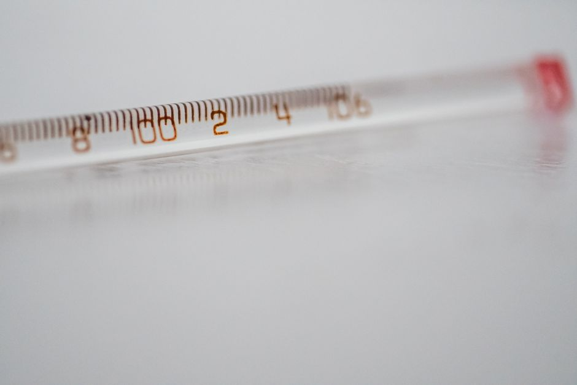

Why Softmax Temperature Reshapes Apparent Confidence
A single scalar dividing your logits can make a model look certain or hesitant without changing a single prediction. Here is why that matters for how we read probabilities.
The probability that isn't quite what it seems
Most classifiers end with a softmax layer, and most people treat the output as a genuine probability: ninety-two per cent confident this is a cat, say. But that number is shaped by an often-invisible parameter called temperature, and changing it can make the same model swing from looking cautious to looking almost reckless, without altering a single one of its predictions. This matters because in practice we rarely stop at the predicted class. We threshold on confidence to decide when to defer to a human, we average probabilities across an ensemble, we rank candidates by score, and we sometimes report confidence to end users as if it were a meaningful quantity on its own.
The softmax function takes a vector of raw scores, the logits, and converts them into a probability distribution. Temperature is a scalar you divide the logits by before applying softmax. At a temperature of one, you get the standard softmax. Push the temperature above one and the distribution softens, probabilities spread out, and the model looks less sure of everything. Push it below one and the distribution sharpens, probabilities concentrate on the top class, and the model looks almost certain even when the underlying evidence has not changed at all.
The crucial point, and the one that trips people up, is that dividing every logit by the same constant does not change which class has the highest score. The argmax, the actual prediction, is invariant to temperature. So you can have two versions of the same model, one reporting sixty per cent confidence and one reporting ninety-nine per cent confidence on the exact same input, both making the identical classification. The decision is unchanged; only the story the model tells about its own certainty has changed.
A worked example with real numbers
Suppose a three-class classifier produces logits of 4.0, 2.0, and 0.5 for classes A, B, and C on some input. At temperature one, softmax gives roughly 0.80 for A, 0.11 for B, and 0.03 for C after normalising, so the model reports about eighty per cent confidence in class A. That already sounds fairly assertive.
Now divide those logits by a temperature of two before applying softmax. The scaled logits become 2.0, 1.0, and 0.25. Running softmax on these gives roughly 0.54 for A, 0.20 for B, and 0.12 for C, with the exponentials summing differently than before. Class A is still the winner, but the gap has narrowed considerably, and the model now looks far less sure of itself, reporting something closer to a coin flip between plausible options rather than a confident call.
Go the other way and divide by a temperature of 0.5, which is equivalent to multiplying the logits by two, giving 8.0, 4.0, and 1.0. Softmax on these produces something like 0.97 for class A, with the remaining probability mass squeezed into a sliver for B and C combined. The same evidence, the same ranking, but now the model looks almost arrogantly certain. Nothing about the input changed, nothing about which class is predicted changed, only the sharpness of the lens through which we view the scores.
This is why I am wary of any pipeline that reports a bare confidence number without stating, or at least fixing, the temperature used to produce it. A confidence of 0.8 is meaningless in isolation; it only becomes informative once you know how it was calibrated and what it tends to mean empirically, for instance whether predictions made at 0.8 confidence are actually correct roughly eighty per cent of the time across a large sample.

Why this is not just a curiosity
Modern neural networks, particularly large and heavily trained ones, have a well-documented tendency to be overconfident: their raw softmax outputs at temperature one often sit much closer to zero or one than their true accuracy would justify. Temperature scaling is one of the simplest fixes for this. You hold the network fixed, take a validation set, and search for a single temperature value that, when applied to the logits before softmax, makes the reported probabilities match observed accuracy as closely as possible. This is a form of post-hoc calibration, and it is attractive precisely because it touches nothing about the model's decisions, only the shape of its confidence.
The leakage-aware practitioner in me insists this temperature must be fitted on a held-out split that played no role in training, and ideally checked again on a separate test split, because tuning it on training data will simply reproduce the overconfidence you were trying to correct. It is also worth remembering that a single global temperature is a coarse instrument: it rescales every class and every input in the same way, so it can fix average miscalibration without fixing miscalibration that varies by class or by region of the input space. More elaborate calibration methods exist for that, but they all build on this same basic insight.
There is a second, quieter implication. When comparing two different models, or two checkpoints of the same model, comparing their raw confidence scores is only fair if both were calibrated, or at least evaluated, at a comparable temperature. Otherwise you are not comparing how well the models understand the data; you are partly comparing how sharply each one happened to scale its logits, which can be an artefact of training dynamics, loss weighting, or even random initialisation rather than anything meaningful about accuracy.
The practical takeaway
If you are building or evaluating a classifier whose confidence scores matter, treat temperature as a parameter you must account for, not an accident of the architecture. Check whether the probabilities are calibrated by comparing reported confidence against observed accuracy in bins, and if they are not, fit a temperature on a proper held-out split before trusting any confidence-based threshold. Never compare confidence scores across models or settings without first asking whether both were produced under comparable calibration, because the same underlying evidence can be made to look timid or triumphant depending entirely on a single divisor you may not even realise is there.